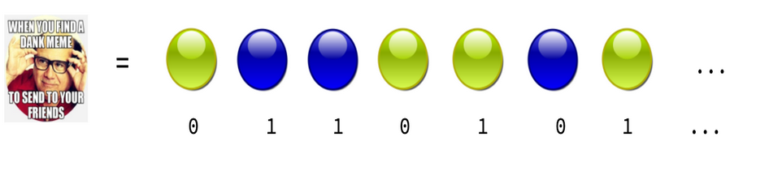
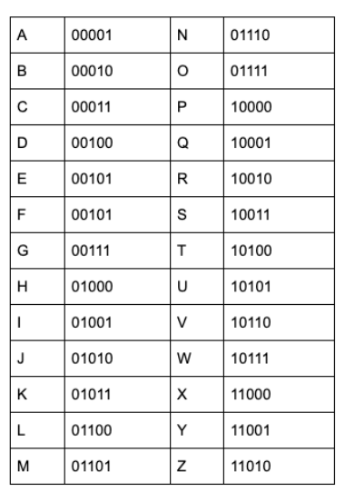

The information age¶
We live in a time that is often called the “Information Age”. This is because we live in a world shaped by information technology. Enormous amounts of information are available at our fingertips — with just a click of a mouse, we have access to volumes of data the likes of which is unprecedented in human history.
Books, memes, videos, tweets, and texts are all forms of information.
What is a Bit?¶
The information in books, memes, tweets and videos can all be stored in binary code, represented by zeros and ones:

We call these zeros and ones bits.
Let’s see how you can switch between bits and other kinds of information. Think in particular about letters. How could we write sentences using binary?
The trick is to have a sort of dictionary that ties each letter to a few bits. For example we could have a dictionary like this:

Then, whenever you want to write a letter, such as F,you would represent it as 00101. This representation, using bits, makes it very easy for a computer to store and transmit the information. It’s a bit like Morse code: dots and dashes. Computers are simple machines, and they speak a very simple language of 0s and 1s. Bits are their alphabet.
Binary Meme Maker¶
To better understand the ideas of bits and of information, we’ll be making our own memes! While you might have made a meme before, we’ll be doing things a little differently this time.
Go to this Scratch project.
Follow the instructions there for how to make your meme. You’ll need to type the letters in using binary!
Once you’re done, “remix” the project and add it to the Quantum Computing Camp studio!